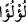
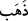
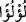
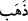

gördüm. Bu sınıflardan biri hesapsız cennete girecekler, diğeri kolay bir hesaba tâbi
tutulacak ve cennete girecekler, bir diğerine ise melekler ve peygamberler şefaat
edeceklerdir. İşte ben, bu hakikat karşısında Müslüman oldum. Ve belki ben bu birinci
sınıftan olurum. Şayet birinci sınıftan olamazsam ikinci sınıftan olurum. Yahut üçüncü
sınıftan olurum, dedim. Sonra Kur’an’ı öğrenip okudum ve bu üç sınıfı Kur’an’da
“Sonra Kitab’ı, kullarımız arasından seçtiklerimize verdik. Onlardan (insanlardan)
kimi kendisine zulmeder, kimi ortadadır, kimi de Allah’ın izniyle hayırlarda öne
geçmek için yarışır. İşte büyük fazîlet budur. (Onların mükâfatı), içine girecekleri Adn
cennetleridir” âyeti kerimelerinde buldum.”
et-Te’vîlâtü’n-Necmiyye’de der ki, Allah Teâlâ onları üç sınıf olarak zikredince bu
sınıfları da bir tertip ve sıraya koymuştur. Allah Teâlâ cenneti cennetteki nimetlenme ve
ziynetlenmeyi zikredince bu sefer tüm sınıfları bir arada zikretmiş “(Onların mükâfâtı),
içine girecekleri Adn cennetleridir” ve onların cennete girmelerini hak ediş olarak
değil, bilakis Allah Teâlâ’nın lütuf ve ihsanı ile olduğunu tenbih etmiştir. Nimet verenin
ilgisi yanında nimete mazhariyet bir imtiyâz değildir. Zira haberde “Cennet ehlinden
Allah Teâlâ’yı dünya günlerinin ölçüsünde her Cuma yâni haftada bir kere gören
vardır. Yine günde bir kere yâni her gün gören vardır. Cennet ehlinden bazılarına da
Mevlâ’nın cemâli onlardan bir lahza bile perdelenmeyip her an Allah’ı görürler”[85]
denilmiştir.
“Orada” kadın olsun erkek olsun ziynet ve süs olarak bir takım “altın bilezikler ve
incilerle süslenirler.”
Çünkü bunlar diğer bileziklerden daha üstündürler. Bu altın bilezikleri daha
başkalarının da giydiği yukarıda geçmiştir (el-Hac 22/23). İnsan sûresinde ise
“Üzerlerinde yeşil ipekten ince ve kalın elbiseler vardır; gümüş bilezikler
takınmışlardır. Rableri onlara tertemiz bir içki içirir” buyrulmaktadır (el-İnsan
76/21).
Cennet ehli hem altın, hem gümüş bilezikleri bir arada takarlar. Bu daha da güzel olur.
Başka bir yoruma göre de mukarrebûn altın, ebrâr ise gümüş takarlar, denilmiştir.
Kâşifî, cennet ehlinin süslenmelerini Acem padişahlarının süslenmelerine benzetir.
İnci anlamına gelen “__WORD__ kelimesi, altın demek olan “__WORD__ kelimesine atfedilerek
mecrûr olarak da okunmuştur. Buna göre anlamı; “inci ile yaldızlanmış ve işlenmiş, inci
parlaklığında altınlar takarlar”, demektir. Çünkü sadece inciden bilezik mârûf değildir.
Ancak ipe dizmek yoluyla olabilir. Bahru’l-ulûm’da der ki “burada “__WORD__ kelimesi, “__WORD__ kelimesine mâtûftur. Zira cennet ehli hem altın hem de incilerden bilezikler
takarlar. Bu Allah’a pek kolaydır. Âhirette dünya işlerinden farklı nice ilginç ve
entresan işler vardır. Bu da onlardandır.”
“Orada giyecekleri elbiseleri de ipektir.” Bu ipek dünya ipeği gibi değildir. Zira bu
tarz bir ipek dünyada yoktur. Aralarında sadece isim benzerliği vardır. Müfredat’ta der
ki “harîr”, ince ipektir. Aslında harîr, pişmiş ibrişim anlamına geliyorsa da “çözgüsü ve